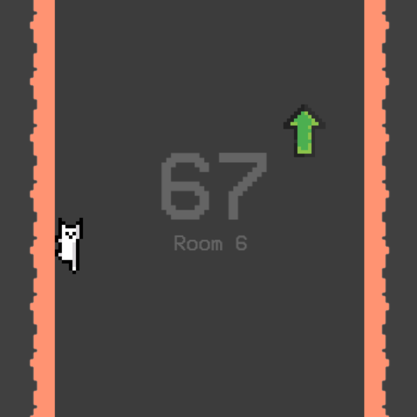
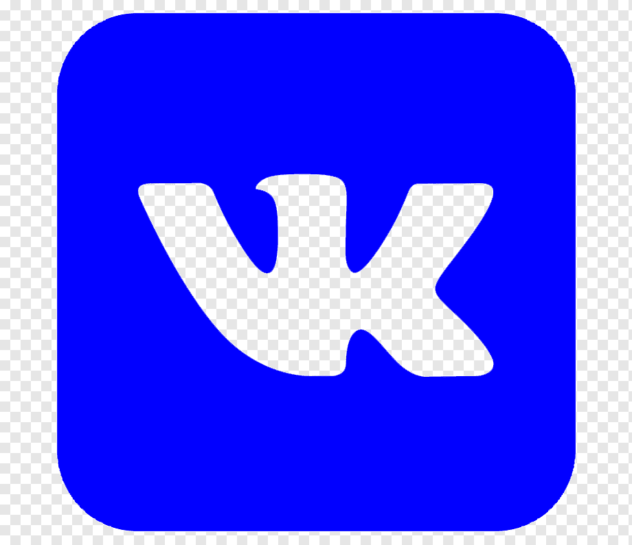

Скришот игры
Игра просто в своём исполнении, интуитивно понятна пользователю, имеет прекрасный дизайн, простое управление, с которым справится даже трёхлетний ребёнок!! Здесь были использованы законы физики (такие как Кулона-Амантона или Второй закон Ньютона), были учтены желания пользователей, всё, что требуется достойной игрушке.
Если вы так хотите сыграть в эту игру, то вы рано хотите, ведь я её не доделал. Любой, кто просмотрел этот проект забудет про него через день, поэтому об игре никто и не вспомнит. Когда-нибудь я обновлю данный сайт и выложу готовую игру. А пока наслаждайтесь скриншотом, видеороликом и таблицей рекордов тестировщиков.
| Таблица очков | ||
|---|---|---|
| 1 | Lasagna | 69419 |
| 2 | Lasagna | 158 |
| 3 | Lasagna | 32 |
| 4 | Lasagna | 18 |
| 5 | Lasagna | -6 |
Вероятно, вы уже слышали о работах этого человека. Он не раз создавал бесполезные, особо никому не нужные игры. Он даже не уверен, играл ли в них кто-то, кроме него самого. А всё почему? Потому что у него не было сайта! Теперь, когда у Алексея Крахотина появилась страничка, на которой он может показывать свои проекты, они взлетят, станут популярными, Алексея заберут в хорошую IT компанию, он будет зарабатывать много денег и обеспечит себе достойную жизнь.
Не стоит забывать, что этот сайт был сделан всего лишь за один вечер, то есть Алексей Крахотин является очень ответственным разработчиком и учеником. Он не только старается исправить оценки по предметам, но и идёт на золотую медаль. Поэтому, дорогой учитель информатики Анастасия Валерьвена, если вы читаете данный текст, то подумайте о моём о тяжелом положении, войдите в него, если в моём сайте чего-то не хватает, то закройте на это глаза. Если хотите, то принесу шоколадку. Спасибо.
Гипотеза: создание сайта расскажет об игре людям.
Цель данного проекта: разрекламировать игру на стадии разработки.
Задачи:

@logicalerror, 2022 г.